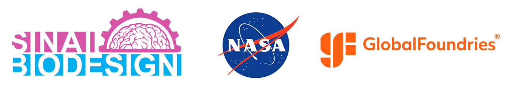

Career success stories inspire us and validate our mission and sense of purpose, filling us up inside. They’re also full of useful lessons for other students and alumni in the midst of their own career journeys.
The stories profiled here reveal myriad career successes—major milestones as well as small steps toward big goals.
Spring Internship at Mount Sinai Hospital’s BioDesign Lab
Student Name: Paola Tepoxtecatl Flores
Major: Mechanical Engineering (A.S.)
Expected Graduation: June 2024
Tell us about your accomplishment:
As part of my internship, designing and sculpting a 3D skull model from MRI scans and CT scans on a software program called Slicer has been a big accomplishment. I was learning how the program functioned as I was creating my model. I was able to understand and give my input when working with circuit maps from [knowledge gained] from a prior semester’s class. These circuit maps are the “power” for the built-in design project, that will help a lot of people waiting for surgeries.
How has the CIE program supported you in your career goals?
CIE has provided me with a one-of-a-kind internship at Mount Sinai Hospital as a BioDesign Engineer. I received helpful feedback on how to better present myself via my resume. Along with working on my interviewing skills, just being more confident within myself to pursue a future opportunity.
I’m excited to be able to say that I was the first Mount Sinai intern from LAGCC. Hopefully, I’ll be able to have another internship with Mount Sinai in the future. All thanks to [CIE Industry Specialist] Talia Barzel! For being the connection that made the opportunity possible.
Why did you choose engineering as your major and how have LaGuarida faculty/staff been supportive in your studies?
Engineering has always been my number one pick to major in. I didn’t know which field of engineering to choose at first since I have an interest in the biomedical field but also aerospace. Since I was indecisive, I picked general mechanical engineering as it provides me the fundamental base of engineering.
100 percent of my professors have been my biggest help with my studies. The office hours that they provide are extremely helpful. During office hours you can review, ask as many questions, study for tests/exams, or just have someone to talk to, and work on projects. I would say to take full advantage when it comes to professors willing to offer their office hours.
What advice do you have for other engineering students at LaGuardia?
I highly advise you to take every class seriously even if the class is just an elective class! Getting along with the professor is also a big help and advantage when seeking a recommendation letter when filling out a transfer application. Lastly a must! Visit CIE advisors for any internship, jobs, or Professional help, they are your connections to the outside world. Getting experiences and wanting them is what they can help provide.
Do you take part in any campus clubs or projects outside of your studies?
Society of Women Engineers is a fantastic and amazing organization that I am currently involved in. My officer position is Vice President, in which I help and guide along with the president, hosting events with previous graduates, women in the engineering field who have attended Ivy League schools, and women currently working in the Engineering field. We are also working with sponsorships for arrange future tours of campuses in different states, especially their engineering programs.
What comes next for you?
Next for me is transferring over to the City College of New York to finish off my mechanical engineering degree, along with minoring in biomedical engineering. I am seeking a summer internship if possible after graduating from LAGCC. I am also looking forward to starting to work within my degree field. -May 2024
NASA research program + summer 2024 internship
Student Name: Noah Alayon
Major: Computer Science
Expected Graduation: December 2024
Tell us about your accomplishment:
I participated in NASA Community College Aerospace Scholars (NCAS) which gave me the opportunity to visit NASA’s Ames Research Center in Silicon Valley, CA. As a result, I will be doing an internship at NASA this summer in which I will be one of the first cohort of interns for the Europa ICONS Program. What excites me the most about my CIE accomplishment is that I have been given the chance to travel and network across the country with like-minded students in a variety of STEM fields. Not only that, but being able to do so while working on fascinating projects. Note: Noah’s summer internship will take place at Cornell University under the research of Dr. Julie Rathbun, supporting the Europa Clipper mission which will launch in October 2024 and explore Jupiter’s moon Europa.
How has the CIE program supported you in your career goals?
The CIE Program has supported me in my career goals through events and the development of soft skills such as communication and networking. Which I feel is important since such things can’t be taught very easily in a classroom setting. In particular, CIE Specialist Talia has been a great help through the support she has given me, and I’m intensely grateful for it.
How have LaGuardia faculty/staff been supportive in your studies?
The MEC Department faculty have all been very supportive of me in my studies. In particular, I would like to mention the Chair, Dr. Dr. Abderrazak Belkharraz, Director of CS, Dr. Praveen Khethavath, and the CS/Math professors that I have taken at LaGuardia, Dr. Andi Toce, Dr. Abdou Drame and Dr. Shenglan Yuan.
What advice do you have for other students at LaGuardia?
The best advice I can give is to make sure that you stay connected to opportunities through various sources on/off campus, attend as many events as possible, and participate in extracurriculars related to your field of study. Essentially, stayed involved, on/off campus. I find that getting in the habit of doing these activities helps you stand out. In addition, you’ll also inevitably keep in touch with like-minded people who want to succeed, which in turn pushes you to do your best too. -May 2024